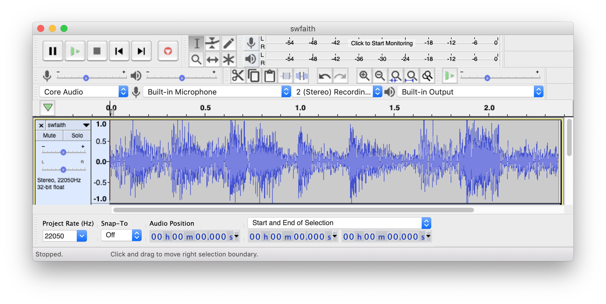
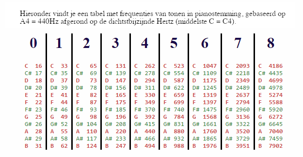

Klinkt goed!
Contents
Klinkt goed!#
Naam |
Beschrijving |
|---|---|
Onderwerp |
Geluid en list comprehension |
Bestandsnaam |
|
Inleveren |
Lever jouw bestand met de juiste bestandsnaam in op GradeScope |
Voorbereiding#
Download Python sounds.
Dit bestand moet ergens uitgepakt worden. Het bevat een aantal bestanden die allemaal in dezelfde map moeten staan:
wk4ex1.py(het bestand dat je gaat uitvoeren!)swfaith.wavswnotry.wavspam.wavaudio.py
Werk vanuit deze directory!#
Je moet vanuit de directory wk4ex1 werken, je zal hiervoor moeten cd’en naar de map wk4ex1. Andere opties zijn:
Je zou bijvoorbeeld de hele directory
wk4ex1naar je desktop kunnen verplaatsen.Dan kan je
cd Desktopen daarnacd wk4ex1uitvoerenVan daaruit kan je zoals gebruikelijk
ipythonstarten en vervolgensrun wk4ex1.py.
Houd alle bestanden in wk4ex1 bij elkaar, als je het bestand wk4ex1.py verplaatst zonder de andere bestanden werkt het niet!
Opwarmen#
Je gaat een aantal hulpfuncties schrijven met behulp van list comprehensions, bedenk nog even voor jezelf hoe list comprehensions werken.
Bekijk de functie three_ize vrijwel aan het begin van wk4ex1.py:
def three_ize(L):
"""three_ize is a function that accepts a list and
returns a list of elements each three times as large.
"""
# lc, een voorbeeld van een list comprehension
lc = [3 * x for x in L]
return lc
Deze functie voert de berekening 3 * x uit op de waarden x in de lijst L. Probeer het uit met dit voorbeeld:
In [1]: three_ize([13, 14, 15])
Out[1]: [39, 42, 45]
List comprehensions zijn een flexibele manier om een functie (of handeling, bijvoorbeeld een berekening) uit te voeren (te “mappen”) op alle elementen van een lijst.
Als je denkt dat je list comprehensions begrijpt, kan je doorgaan! Als je nog meer oefening wilt doen kan je meer voorbeelden van list comprehensions bekijken.
Functie 1: scale#
Gebruik de bovenstaande functie three_ize als voorbeeld om de functie scale te schrijven met onderstaande signature:
def scale(L, scale_factor):
...
Deze functie geeft een lijst terug die vergelijkbaar is met L, behalve dat elk element is vermenigvuldigd met scale_factor. Maak gebruik van list comprehensions! Een voorbeeld:
In [1]: scale([70, 80, 420], 0.1)
Out[1]: [7.0, 8.0, 42.0]
Functie 2: three_ize_by_index#
De volgende stap is het schrijven van een functie three_ize_by_index met list comprehensions waar je gebruik gaat maken van de index (of positie) van elementen in een lijst.
Controleer dat de onderstaande functie three_ize_by_index in jouw bestand wk4ex1.py aanwezig is.
def three_ize_by_index(L):
"""three_ize_by_index has the same behavior as three_ize
but it uses the INDEX of each element, instead of
using the elements themselves -- this is much more flexible!
"""
# nog een voorbeeld van een list comprehension
n = len(L)
lc = [3 * L[i] for i in range(n)]
return lc
Deze functie doet exact hetzelfde als three_ize, maar gebruikt nu de index van elk element. Dat wil zeggen, nu is het de locatie van elk element in een lijst, we noemen deze hier i, die steeds verandert.
Het gebruik van een index maakt list comprehensions nog flexibeler dan wanneer we de elementen rechtstreeks gebruiken, zoals we gaan zien in de volgende opdrachten.
Functie 3: add_2#
Gebruik de bovenstaande functie gebaseerd op index als richtlijn om de functie add_2(L, m) te schrijven met onderstaande signature:
def add_2(L, m):
...
Deze functie krijgt twee lijsten L en m mee en geeft een enkele lijst terug die de elementen van de twee lijsten elementsgewijs bij elkaar optelt. Als de twee lijsten een andere lengte hebben, moet add_2 een lijst teruggeven die even lang is als de kortste van de twee. Je kan de extra elementen van de langere lijst negeren.
Je kan dit bijvoorbeeld doen door min, len(L) en len(m) te combineren. Als voorbeeld zal de regel
n = min(len(L), len(m))
de kleinste van de lengtes van L en m aan n toekennen.
Het is handig om hier een aanpak gebaseerd op index te gebruiken. Je kan de functie three_ize_by_index als voorbeeld gebruiken. Bekijk ook hoe je de onderstaande list comprehension hiervoor zou kunnen gebruiken:
lc = [L[i] + m[i] for ...]
Hieronder zie je twee voorbeelden van het gebruik van add_2:
In [1]: add_2([10, 11, 12], [20, 25, 30])
Out[1]: [30, 36, 42]
In [2]: add_2([10, 11], [20, 25, 30])
Out[2]: [30, 36]
Functie 4: add_3#
Schrijf nu een vergelijkbare functie add_3 met drie argumenten volgens de onderstaande signature:
def add_3(L, m, p):
...
waar L, m en p lijsten zijn en add_3 de som van de drie lijsten teruggeeft, maar met evenveel elementen als de kortste van de drie. De aanpak zal erg lijken op die voor add_2.
Functie 5: add_scale_2#
Schrijf nu een functie add_scale_2 met de onderstaande signature:
def add_scale_2(L, m, L_scale, m_scale):
...
Deze functie krijgt twee lijsten L en m mee en twee floating-point getallen L_scale en m_scale. Deze staan respectievelijk voor schaalfactor voor L en schaalfactor voor m.
De functie add_scale_2 moet een enkele lijst teruggeven die een elementsgewijze optelling is van de twee lijsten, maar ieder vermenigvuldigd met zijn respectievelijke floating-point getallen. Als de lijsten niet dezelfde lengte hebben, moet de functie een lijst met de lengte van de kortste lijst teruggeven. Je kan extra elementen negeren.
Hier zie je twee voorbeelden:
In [1]: add_scale_2([10, 20, 30], [7, 8, 9], 0.1, 10)
Out[1]: [71.0, 82.0, 93.0]
In [2]: add_scale_2([10, 20, 30], [7, 8], 0.1, 10)
Out[2]: [71.0, 82.0]
Dit zal nogal lijken op de vorige opdrachten!
De hulpfunctie randomize#
Bekijk deze hulpfunctie in het bestand wk4ex1.py:
def randomize(x, chance_of_replacing):
"""randomize accepts an original value, x
and a fraction named chance_of_replacing.
With the "chance_of_replacing" chance, it
should return a random float from -32767 to 32767.
Otherwise, it should return x (not replacing it).
"""
r = random.uniform(0, 1)
if r < chance_of_replacing:
return random.uniform(-32768, 32767)
else:
return x
Lees de docstring en probeer de functie uit.
Het enige dat we hier van jou vragen is om te begrijpen wat deze functie doet: hoe vaak wordt de oorspronkelijke waarde teruggegeven en hoe vaak een willekeurige waarde. Deze willekeurige waarde valt binnen het bereik van de drukgolven van een geluid.
De functie geeft een willekeurige waarde terug, maar hier is een voorbeeld van een aantal keer dat de functie wordt uitgevoerd:
In [1]: randomize(42, .5)
Out[1]: 42
In [2]: randomize(42, .5)
Out[2]: 42
In [3]: randomize(42, .5)
Out[3]: 29209.30669767395
In [4]: randomize(42, .5)
Out[4]: 42
In [5]: randomize(42, .5)
Out[5]: 17751.221299744262
Functie 6: replace_some#
Schrijf nu een functie replace_some met de volgende signature:
def replace_some(L, chance_of_replacing):
...
De functie krijgt een lijst L en een floating-point getal chance_of_replacing mee. replace_some moet onafhankelijk van elkaar elk element in L vervangen (of niet vervangen) door gebruik te maken van de hulpfunctie randomize.
Gebruik randomize
Gebruik randomize in een list comprehension, meer hoef je niet te doen! Bedenk hoe je onderstaand statement kan aanvullen (en vergeet niet om lc terug te geven):
lc = [randomize(..., ...) for x in L]
Aangezien de functie willekeurig is, zal de uitvoer op jouw systeem niet gelijk zijn, maar probeer of het ongeveer als volgt werkt:
In [1]: replace_some(range(40, 50), .5) # vervang ongeveer de helft (hopelijk blijft de 42 staan!)
Out[1]: [40, 41, 42, -17461.09350529409, 44, -13989.513742241645, 46, -26247.774200304026, 48, 49]
In [2]: replace_some(range(20, 30), .1) # vervang ongeveer een tiende (maar het is wel willekeurig: hier zijn er twee vervangen)
Out[2]: [20, 21, 16774.26240973895, 23, 24, 25, -18184.919872079583, 27, 28, 29]
Om je te helpen met testen zijn hier een paar assert statements om in je code over te nemen. Merk op dat de tweede assertion stelt dat het resultaat ongelijk is aan 42!
assert replace_some(range(40, 50), 0) == list(range(40, 50))
assert replace_some([42], 1.0) != [42]
Naast dat ze dienen als oefening met data en functies zijn bovenstaande functies ook handig als hulpmiddel bij het maken van functies die geluidsdata op verschillende manieren aanpassen.
Je kan de functie replace_some gebruiken om “ruis” (willekeurige waardes) toe te voegen aan een deel van het geluid, om het geluid bijvoorbeeld te laten “kraken”.
Geluid programmeren#
Probeer eerst onderstaande functie, die al in het bestand wk4ex1.py zou moeten staan. Je kan dit uitvoeren met test():
# a function to make sure everything is working
def test():
"""A test function that plays swfaith.wav
You'll need swfaith.wav in this folder.
"""
play("swfaith.wav")
Om dit te laten werken, moet jouw Python versie wel geluid ondersteunen (normaal gesproken moet dit geen probleem zijn). Als het niet werkt, is het handig om met iemand samen te werken bij wie het wel werkt.
Het is ook nodig dat het bestand swfaith.wav in dezelfde directory staat als wk4ex1.py. Als je in de directory werkt waar je de bestanden hebt uitgepakt, zou dit zo moeten zijn. Als dat niet zo is, dan kan je de
bestanden die je hebt uitgepakt kopiëren naar de map waarin je aan het werk bent.
Voordat we verder gaan heb je een klein beetje achtergrondinformatie over geluidsbestanden nodig. Daarna ga je een aantal functies schrijven om audio te bewerken.
Geluidsbestanden#
Wat zit er in een geluidsbestand?
Afhankelijk van het formaat kunnen audiogegevens op veel verschillende manieren gecodeerd en opgeslagen worden. Een van de meest eenvoudige coderingen staat bekend als pulscodemodulatie (PCM), waarbij de geluidsgolven om de zoveel tijd worden gesampled en waarden krijgen in het bereik -128 tot 127 (als er 1 byte per geluidssample wordt gebruikt) of -32768 tot 32767 (als er 2 bytes voor elke sample zijn). Wikipedia legt het hier uit.
Het .wav-bestandsformaat codeert audio in principe op deze manier, en het programma Audacity (beschikbaar voor macOS, Linux en Windows) is een uitstekend hulpmiddel om de individuele PCM-samples van een audiobestand te visualiseren. Je hebt Audacity niet nodig voor deze opdracht, maar het is leuk om er mee te spelen. Audacity kan ook .wav omzetten naar .mp3 en vele andere formaten.

Aan de slag met geluid#
We laten twee voorbeelden zien hoe je geluidsdata kan lezen en bewerken. Probeer deze voorbeelden!
Voorbeeld 1: change_speed#
De functie change_speed zou aanwezig moeten zijn in wk4ex1.py, zo niet dan kan je het hier kopiëren en in jouw bestand plakken:
# De voorbeeldfunctie change_speed
def change_speed(filename, newsr):
"""change_speed allows the user to change an audio file's speed.
Arguments: filename, the name of the original file
newsr, the new sampling rate in samples per second
Result: no return value, but
this creates the sound file 'out.wav'
and plays it
"""
print("Het originele geluid afspelen...")
play(filename)
sound_data = [0, 0] # een "lege" lijst
read_wav(filename, sound_data) # laad gegevens IN sound_data
samps = sound_data[0] # de samples van de ruwe geluidsgolven
print("De eerste 10 geluidsdruksamples zijn\n", samps[:10])
sr = sound_data[1] # de sampling rate, sr
print("Het aantal samples per seconde is", sr)
# deze regel is niet echt nodig, maar staat hier voor de consistentie...
newsamps = samps # dezelfde samples als eerder
new_sound_data = [newsamps, newsr] # nieuwe geluidsgegevens
write_wav(new_sound_data, "out.wav") # sla de gegevens op naar out.wav
print("\nNieuw geluid afspelen...")
play("out.wav") # speel het nieuwe bestand 'out.wav' af
Lees het voorbeeld door en probeer het met de volgende geluidsbestanden:
In [1]: change_speed("swfaith.wav", 44100) # snelle Vader
# ... aantal regels uitvoer ...
In [2]: change_speed("spam.wav", 11025) # langzame Monty Python
# ... aantal regels uitvoer ...
In [3]: change_speed("swnotry.wav", 22050) # Yoda op normale snelheid
# ... aantal regels uitvoer ...
Hoe werkt deze code?
De geluidsdata wordt in twee onderdelen teruggegeven door de aanroep naar
read_wav, via de regelsread_wav(filename, sound_data) samps = sound_data[0] sr = sound_data[1]
Merk op dat dit losse regels zijn en dat
sound_databegint met de waarde[0, 0]. Wat hier gebeurt is datread_wavde lijstsound_datazo aanpast dat het element met index0de lijst samples bevat en het element met index1de sampling rate (sr).Na deze aanroep bevat de variabele
sampseen grote lijst met ruwe luchtdruksamples (floats). Druk deze lijst niet af, deze is mogelijk te groot en kan IPython vertragen of zelfs doen crashen!Bovendien bevat na de aanroep de variabele
sreen integer waarde met de sampling rate, het aantal samples dat per seconde afgespeeld moet worden om de normale snelheid te bereiken.Er wordt hier en daar wat afgedrukt met
printzodat je iets van de gegevens kan zien.We hebben de nieuwe sampling rate al, dat is het argument
newsr. Voor de consistentie gebruiken we de variabelenewsampsom de nieuwe geluidssamples een naam te geven. In dit geval veranderen ze helemaal niet, maar in sommige latere programma’s zalnewsampsverschillen vansamps.De code schrijft dan
newsampsennewsrweg naar een bestandout.wav, die in de map waar je in bezig bent opgeslagen zal worden. Hierbij wordt een oudere versie van dat bestand overschreven.Ten slotte speelt de functie het nieuwe bestand af, met de nieuwe sampling rate
newsr.
Variaties hierop zul je tegenkomen in alle geluidsfuncties.
Het volgende voorbeeld laat zien hoe je een nieuw geluid kunt creëren door de samples zelf te veranderen. Dat wil zeggen, newsamps zal anders zijn dan samps (de oude samples). Vergeet niet dat samps een zeer grote lijst van luchtdrukwaarden zal zijn ( ongeveer 50.000 elementen).
Voorbeeld 2: flipflop#
De functie flipflop zou aanwezig moeten zijn in wk4ex1.py, zo niet dan kan je het hier kopiëren en in jouw bestand plakken:
def flipflop(filename):
"""flipflop swaps the halves of an audio file
Argument: filename, the name of the original file
Result: no return value, but
this creates the sound file 'out.wav'
and plays it
"""
print("Het originele geluid afspelen...")
play(filename)
print("Geluidsgegevens inlezen...")
sound_data = [0, 0]
read_wav(filename, sound_data)
samps = sound_data[0]
sr = sound_data[1]
print("Nieuw geluid berekenen...")
# dit bepaalt het middelpunt en noemt dat x
x = len(samps) // 2
newsamps = samps[x:] + samps[:x]
newsr = sr
new_sound_data = [newsamps, newsr]
print("De nieuwe geluidsgegevens opslaan...")
write_wav(new_sound_data, "out.wav") # schrijf gegevens naar out.wav
print("Nieuw geluid afspelen...")
play("out.wav")
Let op het middelste gedeelte van deze code, waar de nieuwe geluidssamples gemaakt worden op basis van de oude. In dit geval is newsamps een “geflipflopde” versie van de oude samps. Merk verder op dat deze code precies hetzelfde is als de opdracht flipside uit fijne functies: flipflop plaatst de tweede helft van het geluid voor de eerste helft!
Bij het schrijven van jouw geluidsbewerkende functies kan je flipflop als startpunt gebruiken.
Audiofunctie 1: reverse#
Schrijf nu een geluidsbewerkende functie reverse met de volgende signature
def reverse(filename):
...
zodat reverse een filename accepteert, net als flipflop. Kopieer en plak flipflop om hiermee te beginnen!
Net als bij flipflop moet de sampling rate niet veranderen, maar de functie moet een omgekeerde lijst van geluidssamples maken en deze vervolgens op dezelfde manier verwerken als de twee bovenstaande voorbeelden. Dat wil zeggen dat je ze naar het bestand out.wav wilt schrijven en vervolgens dat bestand wilt afspelen.
Een lijst omdraaien
Vergeet niet dat je in Python samps[::-1] kan schrijven om de lijst samps om te draaien!
Zie het volgende voorbeeld:
In [1]: reverse("swfaith.wav") # redaV htraD klinkt spookachtiger maar minder intimiderend
# ... veel uitvoer ...
Merk op dat deze functie reverse geen gebruik hoeft te maken van de hulpfuncties die je hiervoor geschreven hebt, maar de volgende functies wel!
Audiofunctie 2: volume#
Schrijf nu een geluidsbewerkende functie volume met de volgende signature
def volume(filename, scale_factor):
...
zodat volume een filename accepteert zoals gebruikelijk en een floating-point waarde scale_factor. Vervolgens moet volume op de gebruikelijke manier het geluid verwerken, waarbij het uitvoerbestand en het afgespeelde geluid de amplitude (volume) wordt geschaald met de schaalfactor scale_factor. Met andere woorden, elke sample moet worden vermenigvuldigd met scale_factor.
Gebruik de hulpfunctie scale
Gebruik de hulpfunctie scale die je eerder hebt geschreven. Wat je nodig hebt is
newsamps = scale(..., ...)
Dit is een typisch voorbeeld, steeds zullen maar kleine aanpassingen nodig zijn voor elke volgende audio functie die je gaat schrijven.
Zie de volgende voorbeelden:
In [1]: volume("swfaith.wav", .1) # Een rustiger Darth...
# ... veel uitvoer ...
In [2]: volume("swfaith.wav", 10.0) # Een hele drukke Darth!
# ... veel uitvoer ...
Je zult merken dat jouw gehoor zich opmerkelijk goed aanpast aan de veranderingen in het absolute volume van deze functie, waardoor het waargenomen effect aanzienlijk minder is dan je zou verwachten.
Je zult ook merken dat als je het volume te veel verhoogt, het geluid vervormd raakt, net als wanneer een versterker op 11 wordt gezet.
Audiofunctie 3: static#
Schrijf nu een geluidsbewerkende functie static met de volgende signature
def static(filename, probability_of_static):
...
zodat static een filename (zoals gebruikelijk) en een floating-point waarde probability_of_static accepteert, waarvan je mag aannemen dat deze tussen 0 en 1 ligt.
static moet het geluid op de gebruikelijke manier verwerken, waarbij de uitvoersamples met een kans gelijk aan probability_of_static moeten worden vervangen door een willekeurig getal tussen -32768 en 32767.
Je gebruikt hier de hulpfunctie replace_some die je al eerder hebt geschreven. Je hoeft randomize niet te gebruiken want deze wordt al door replace_some gebruikt!
Zie de volgende voorbeelden:
In [1]: static("swfaith.wav", .05) # Vader, die een tunnel in rijdt
# ... veel uitvoer ...
In [2]: static("swfaith.wav", .25) # Vader op een dial-upverbinding vanuit een galaxy far, far away
# ... veel uitvoer ...
Je zou kunnen uitproberen hoe hoog je het percentage ruis kunt verhogen totdat het origineel niet meer herkenbaar is. Mensen kunnen zich hier minder goed aan aanpassen dan aan volumeveranderingen.
Audiofunctie 4: overlay#
Schrijf nu een geluidsbewerkende functie overlay met de volgende signature
def overlay(filename1, filename2):
...
zodat overlay twee bestandsnamen accepteert, en een nieuw geluid creëert dat de twee overlapt (combineert). Het resultaat moet net zo lang zijn als de kortere van de twee. (negeer eventuele extra samples, net als in add_scale_2.)
Gebruik de add_scale_2 hulpfunctie om je hierbij te helpen! Op die manier kan je het relatieve volume van de twee bestanden aanpassen. Het is ook mogelijk, maar zeker niet verplicht, om meer argumenten toe te voegen aan de functie overlay, zodat je hiermee de relatieve volumes kan aanpassen (of samples kan bijsnijden, maar dat is lastiger).
Onthoud dat add_scale_2(samps1, samps2, 0.5, 0.5) lijsten (samps) als argumenten accepteert en geen bestandsnamen, dat zijn gewoon strings! De samps zijn lijsten van de ruwe geluidsdata.
Zie het volgende voorbeeld:
In [1]: overlay("swfaith.wav", "swnotry.wav") # Vader vs. Yoda
# ... veel uitvoer ...
Extra: hoe kun je overlay zo aanpassen dat deze het langere geluid niet afkapt? In plaats van het af te kappen, zou je het kunnen laten doorgaan tegen stilte, of je zou het kortere geluid kunnen herhalen?
De volgende functie combineert een bestand met een verschoven versie van zichzelf.
Audiofunctie 5: echo#
Deze is wat uitdagender…
Probeer een geluidsbewerkende functie echo te schrijven met de volgende signature
def echo(filename, time_delay):
zodat echo een bestandsnaam accepteert zoals gebruikelijk en een floating-point waarde time_delay, die een aantal seconden voostelt.
Dan moet echo het geluid op de gebruikelijke manier verwerken, waarbij het originele geluid wordt overlapt door een kopie van zichzelf die in de tijd wordt verschoven met time_delay seconden.
Om de geluiden te laten overlappen zal je add_scale_2 weer willen gebruiken, zoals eerder.
Om de geluiden te verschuiven kan je de sampling rate gebruiken om het aantal samples voor een bepaald aantal seconden te bepalen:
Als bijvoorbeeld
time_delayeen waarde0.1heeft en de sampling rate22050, dan moet je2205samples wachtenOf, als
time_delayeen waarde0.25heeft en de sampling rate44100, dan is het aantal samples dat je moet wachten11025
Stilte toevoegen
De meest gemakkelijke manier om een “wachttijd” aan samples toe te voegen is om een “lege ruimte” of “leeg geluid” aan het begin
van samps toe te voegen, en dit kan je doen door een lijst nullen aan het begin van samps te plaatsen! Bijvoorbeeld,
samps2 = [0] * 42 + samps
zal 42 samples “wachten” door 42 samples zonder geluid aan het begin van de geluidsdata samps toe te voegen.
Je hebt waarschijnlijk een andere waarde dan 42 nodig, de uitdaging is om daar de juiste waarde te berekenen! Hoe zou je er nu achter kunnen komen welke integer waarde je nodig hebt in plaats van 42?
Bedenk dat je weet hoe lang je wilt wachten (in seconden) en wat de sampling rate is (in samples per seconde).
Zorg ervoor dat je een integer gebruikt. Bendenk dat als je een floating-pointg getal
fhebt, je daar een integer van kan maken metint(f).
Terzijde, dit is maar één mogelijke aanpak, er zijn ook andere benaderingen mogelijk voor echo.
Zie het volgende voorbeeld:
In [1]: echo("swfaith.wav", .1) # Hoe veel nullen zijn er aan het begin nodig?
# ... veel uitvoer ...
Voorbeeld 3: gen_pure_tone#
De laatste voorbeeldfuncties genereren een zuivere sinusvormige toon. Hier is de code, hoewel deze ook in het bestand zou moeten staan:
def gen_pure_tone(freq, seconds, sound_data):
"""pure_tone returns the y-values of a cosine wave
whose frequency is freq Hertz.
It returns nsamples values, taken once every 1/44100 of a second.
Thus, the sampling rate is 44100 hertz.
0.5 second (22050 samples) is probably enough.
"""
if sound_data != [0, 0]:
print("De waarde van sound_data moet [0, 0] zijn.")
return
sampling_rate = 22050
# hoeveel samples we moeten genereren
nsamples = int(seconds * sampling_rate) # naar beneden afgerond
# de factor f om de frequentie te schalen
f = 2 * math.pi / sampling_rate # omrekenen van samples naar Hz
# de factor a om de amplitude te schalen
a = 32767.0
sound_data[0] = [a * math.sin(f * n * freq) for n in range(nsamples)]
sound_data[1] = sampling_rate
return sound_data
def pure_tone(freq, time_in_seconds):
"""Generates and plays a pure tone of the given frequence."""
print("Toon genereren...")
sound_data = [0, 0]
gen_pure_tone(freq, time_in_seconds, sound_data)
print("De nieuwe geluidsgegevens opslaan...")
write_wav(new_sound_data, "out.wav") # schrijf gegevens naar out.wav
print("Nieuw geluid afspelen...")
play("out.wav")
Bekijk deze code en probeer het uit om een gevoel te krijgen voor wat het doet, hoewel de wiskunde achter de sinusgolf niet cruciaal is.
De belangrijke details zijn dat de functie pure_tone een gewenste frequentie freq en een tijdsduur time_in_seconds accepteert. De wiskundige details worden dan overgelaten aan gen_pure_toon.
Zie het volgende voorbeeld:
In [1]: pure_tone(440, 0.5) # een A van 0,5 seconde in concertstemming
# ... veel uitvoer ...
Je kan de frequenties van andere noten vinden op Wikipedia en op vele andere plekken. Hier is ook een klein overzicht:

Het is interessant om op te merken dat C0 onder het bereik van het normale menselijke gehoor ligt (we kunnen slechts tot ongeveer 20 Hz horen), maar B8 laat veel ruimte over (de meeste mensen onder de 40 jaar kunnen tot 20.000 Hz of hoger horen). Ook gaan de meeste piano’s alleen naar A0 (28 Hz), maar de Bösendorfer Imperial Concert Grand heeft extra toetsen (zwart gekleurd) die helemaal naar C0 gaan. Voor het geval je extra bas nodig hebt!
Audiofunctie 6: chord#
Het laatste probleem is om op basis van het bovenstaande voorbeeld een functie te schrijven die akkoorden maakt, met de volgende handtekening:
def chord(f1, f2, f3, time_in_seconds):
...
zodat chord drie floating-point frequenties f1, f2 en f3 accepteert, en een floating-point getal time_in_seconds voor de tijdsduur.
De functie chord moet een akkoord van 3 noten maken en spelen gebaseerd op deze frequenties.
Je zult drie sets van samps en sr uit gen_pure_tone willen krijgen, bijvoorbeeld,
samps1, sr1 = gen_pure_tone(f1, time_in_seconds, [0, 0])
samps2, sr2 = gen_pure_tone(f2, time_in_seconds, [0, 0])
samps3, sr3 = gen_pure_tone(f3, time_in_seconds, [0, 0])
Vervolgens heb je echt een add_scale_3 functie nodig, hoewel we die nog niet hebben. Maar je kunt deze wel maken! (Je zou add_scale_2 en add_3 als uitgangspunt kunnen nemen, maar we raden aan om add_scale_3 als zelfstandige functie te schrijven, en niet om die andere functies aan te roepen).
Tot slot moet je de resulterende lijst samples nemen (noem deze bijvoorbeeld newsamps) en deze verwerken met behulp van code die je van de vorige functies hebt geleend:
new_sound_data = [newsamps, newsr]
print("De nieuwe geluidsgegevens opslaan...")
write_wav(new_sound_data, "out.wav") # schrijf gegevens naar out.wav
print("Nieuw geluid afspelen...")
play("out.wav")
Zie het volgende voorbeeld:
In [1]: chord(440.000, 523.251, 659.255, 1.0) # A mineur
# ... veel uitvoer ...
Klinkt jouw akkoord vreselijk? Weet je nog wat er gebeurde toen je het volume te veel verhoogde? gen_pure_tone produceert een toon die op maximaal volume staat. Wanneer je twee (of drie) van dergelijke tonen combineert, tellen hun piekvolumes bij elkaar op en het resultaat is te luid voor de computer, waardoor er vervorming ontstaat. Bedenk wat je zou
kunnen doen om hiervoor te compenseren zonder het akkoord te stil te maken. In andere woorden:
Je zult de totale amplitude op
1.0willen houden.Aangezien de amplitude van elk origineel
1.0is, moet je een breuk (fractie) als schaalfactor gebruiken om ervoor te zorgen dat de totale amplitude van de opgetelde golven op 1.0 of minder blijft.Als de amplitude van golf groter is dan
1.0, zal hij “afgekapt” worden door de luidsprekers. Dit klinkt alsof er luide ruis in het geluid zit (of het klinkt gewoon heel slecht).
Uitdaging: Gebruik de bovenstaande frequentietabel om het akkoord te veranderen van een A-mineur naar een A-majoor akkoord. Of maak jouw eigen akkoord…
Maar hoe zit het met het creëren van een C mineur septiem (of overmatig) akkoord?
Inderdaad, je zou grotere akkoorden kunnen maken met willekeurig veel tonen… of andere ongewone/onbelangrijke/inspirerende/verstorende algoritmisch gegenereerde geluidseffecten. We moedigen je zeker aan om dingen uit te proberen! Het is niet vreselijk moeilijk om iets te schrijven dat echte muziek speelt!
Verder uitbreiden
Het kan helpen om functies als a_flat(duration) of cm7(duration) te hebben, en dan iets te schrijven dat daarop voortbouwt.
Inleveren#
Je hoeft voor dit practicum alleen maar het bestand wk4ex1.py in te leveren, niet de andere bestanden die je gedownload hebt.